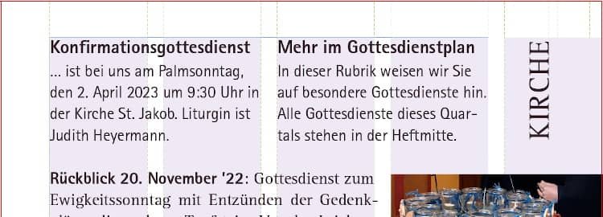
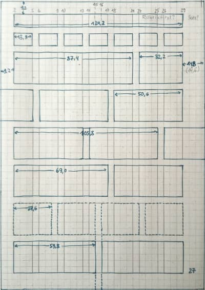

@charak
@charakRaster für ein Magazin
Für die Kirchengemeinde meiner früheren Heimat arbeite ich am vierteljährlichen Gemeindebrief mit. Ich kürze Texte, bearbeite Fotos und vor allem bringe ich die Inhalte schön angeordnet auf die Seiten. Nun soll dieser Gemeindebrief mit dem aus der Nachbargemeinde zusammengeführt werden. Weil wir keines der Magazine bevorzugen wollen, kann ich dafür ein völlig neues Heftdesign entwickeln.
In beiden Gemeindebriefen gibt es Themenartikel, Fotorückblicke, Terminhinweise und Formelles (wie Taufen und Geburtstage). Es sind also recht unterschiedliche Inhalte. Um diese abwechslungsreich, aber auch geordnet darzustellen, empfiehlt es sich, einen Gestaltungsraster zu verwenden (ja, im Grafikdesign heißt es der Raster). Im Grunde sind es Hilfslinien, die den Seitenrand, Textspalten und evtl. sogar Bereiche für Abbildungen definieren. Auch im vorangehenden Gemeindebrief haben wir bereits mit einem Raster gearbeitet:

Bisher haben wir die DIN-A5-Seite in fünf Spalten aufgeteilt, wobei die fünfte ganz am Seitenrand lag und als großzügiger Weißraum meistens leer blieb bis auf Rubriktitel, Seitenzahl, Bildteile und seltene Randbemerkungen. Lange Artikeltexte füllten die inneren vier Spalten; kurze Termine haben wir zweispaltig gestaltet.
Wozu überhaupt einen Gestaltungsraster?
Ich gebe zu, mir macht es großen Spaß, ein Layout zu planen, Abstände und Spalten zu berechnen, für harmonische Verhältnisse zu sorgen. Ein Raster bringt für die Heftgestaltung aber auch echte Vorteile:
- Orientierung, um verschiedene Inhalte auf der Seite anzuordnen
- Schnelleres Arbeiten, weil bereits gute Vorgaben vorhanden sind
- Einheitliche Ränder und Abstände, konsistente Gestaltung
- Vertrautheit, damit Lesende sich schnell zurechtfinden
- Konzentration auf die Inhalte, statt auf jeder Seite komplett neu über deren Platzierung nachdenken zu müssen
- Klare Hierarchie für Überschriften, Texte und Bilder
- Funktionierende, aber auch flexible Seiten-Kompositionen
Ein Gegenargument mag sein, dass ein Raster einengen würde, zu starr sei und die gestalterische Freiheit einschränke. Aber es sagt ja keiner, dass man sich streng und ausschließlich an den Raster halten muss – es sind gute Leitlinien, die man in besonderen Fällen natürlich völlig ignorieren kann.
Der Weg zum neuen Raster
Der großzügige Rand in der fünften Spalte war ein typisches, auffälliges Element des alten Magazins. Obwohl dadurch weniger Text auf eine Seite passt, finde ich diese Lösung noch immer originell und gestalterisch reizvoll. Weil sich das neue Heft aber vom alten unterscheiden soll, kommt dieses Rastersystem nicht mehr in Frage.
Ich habe mir also erstmal grob überlegt, welche Seitenränder sinnvoll sind und wie ich die Spalten aufteilen könnte. Die Textzeilen müssen auch in schmalen Spalten eine sinnvolle Länge haben (35–80 Zeichen pro Zeile ist ein guter Richtwert), wobei man ja zwei oder drei Rasterspalten zusammennehmen kann.

Zweispaltiger Satz allein war mir zu langweilig. Bei drei Spalten auf einer DIN-A5-Seite sind die Textzeilen fast zu kurz, wirklich abwechslungsreich wird das Layout dadurch nicht (außer die komplette Breite oder drei einzelne Spalten könnte man einen Text noch 2 zu 1 in Spalten teilen).
Bei vier Spalten kann man eine einzelne Spalte nur für kleinere Randbemerkungen verwenden, mit der normalen Textgröße passen dann zu wenige Buchstaben in eine Zeile. Übrig bleiben eine Teilung von 2 zu 2 (also wie zweispaltiger Satz), und 3 zu 1 (ähnlich der dreispaltigen Lösung). Weil wir im Gemeindebrief nicht sooo viele kleine Randbemerkungen oder schmale Bilder verwenden, war mir die vierspaltige Lösung zu unflexibel.
Die fünfspaltige Lösung ist sehr flexibel und die asymmetrische Spaltenteilung von 3 zu 2 finde ich reizvoll. Das einzige, was dagegen spricht: Ich hatte doch beim alten Heft schon fünf Spalten. Zwar eine davon im Rand, aber trotzdem.
Nach ein bisschen Recherche bin ich auf das Gestaltungsraster von Adveniat gestoßen. Sie arbeiten bei einer doch recht kleinen A5-Seite sogar mit sieben Spalten. Wenn man zu viele Spalten definiert, wird es das Dokument beim Gestalten unübersichtlich und erscheint später beim Lesen beliebig – aber die Anwendungsbeispiele von Adveniat sahen recht gut aus, diese Spaltenzahl schien zu funktionieren. Die sieben Spalten habe ich also übernommen, aber mit zwei Anpassungen.
Sieben breitere Spalten, kleinere Ränder
Im Gegensatz zu Adveniat habe ich die Spalten geringfügig verbreitert. Statt 3 × 4,5 mm sind meine Spalten 3 × 4,6 mm (mit 4,6 mm Abstand dazwischen). So kann die Schrift für den Gemeindebrief etwas größer sein (wichtig für ältere Leser:innen), auch wenn dafür die Ränder kleiner ausfallen.
Stichwort Ränder: In einem Heft sollten die Seitenränder innen und außen nicht gleich breit sein! Im Bund eines Heftchens kommen nämlich die inneren Ränder der linken und rechten Seite zusammen und ergänzen sich optisch zu einem doppelten Rand. Darum sollte man sie schmaler anlegen. Gleichzeitig bietet ein breiterer Außenrand mehr Platz für die Daumen beim Blättern.

Nach ein bisschen Rumprobieren auf Papier (erst in Originalgröße, später vergrößert auf einem Kästchenraster), habe ich mich schließlich auf eine 7er-Spalten-Einteilung festgelegt. In der Skizze sieht man einige Beispiel-Aufteilungen: Ein Block über 5 Spalten mit einer Randbemerkung über 2 Spalten; ein Bildblock im Innenrand (mit Spalte ganz links) und zwei Textspalten über jeweils 3 Rasterspalten. Um die Termine wie gewohnt symmetrisch in zwei Spalten setzen zu können, habe ich mir noch Hilfslinien in der Mitte angelegt.
Normalerweise ist ein Gestaltungsraster auch waagrecht unterteilt. So ergeben sich mehrere Rechtecke, die sehr gut geeignet sind, um modulare Bausteine zu platzieren, beispielsweise die Produktfotos in einem Katalog. Im Raster kann auch der Platz für die Überschrift einer Seite festgelegt werden oder von wiederkehrenden Gestaltungselementen wie Rubriktitel oder einem Register.
Für unseren neuen Gemeindebrief ist so eine waagrechte Unterteilung nicht unbedingt nötig. Vielleicht ergibt sie sich später beim Arbeiten mit dem Dokument. Zunächst orientiere ich mich stattdessen am Abstand der Zeilen und richte Bilder danach aus.
Ich freue mich darauf, diesen neuen Raster anzuwenden und bin gespannt, wie gut sich die asymmetrische Teilung (3 zu 4 Rasterspalten) für eine interessante Gestaltung in der Praxis eignet. Ein sehr gutes Buch zu dem Thema ist übrigens „Rastersysteme für die visuelle Gestaltung“ (dt./engl.) von Josef Müller-Brockmann. Es beschreibt die Vorgehensweise wie man einen Raster konstruiert und liefert Praxisbeispiele und Hintergründe.
---
Rubrik(en):
#methodik
#typografie